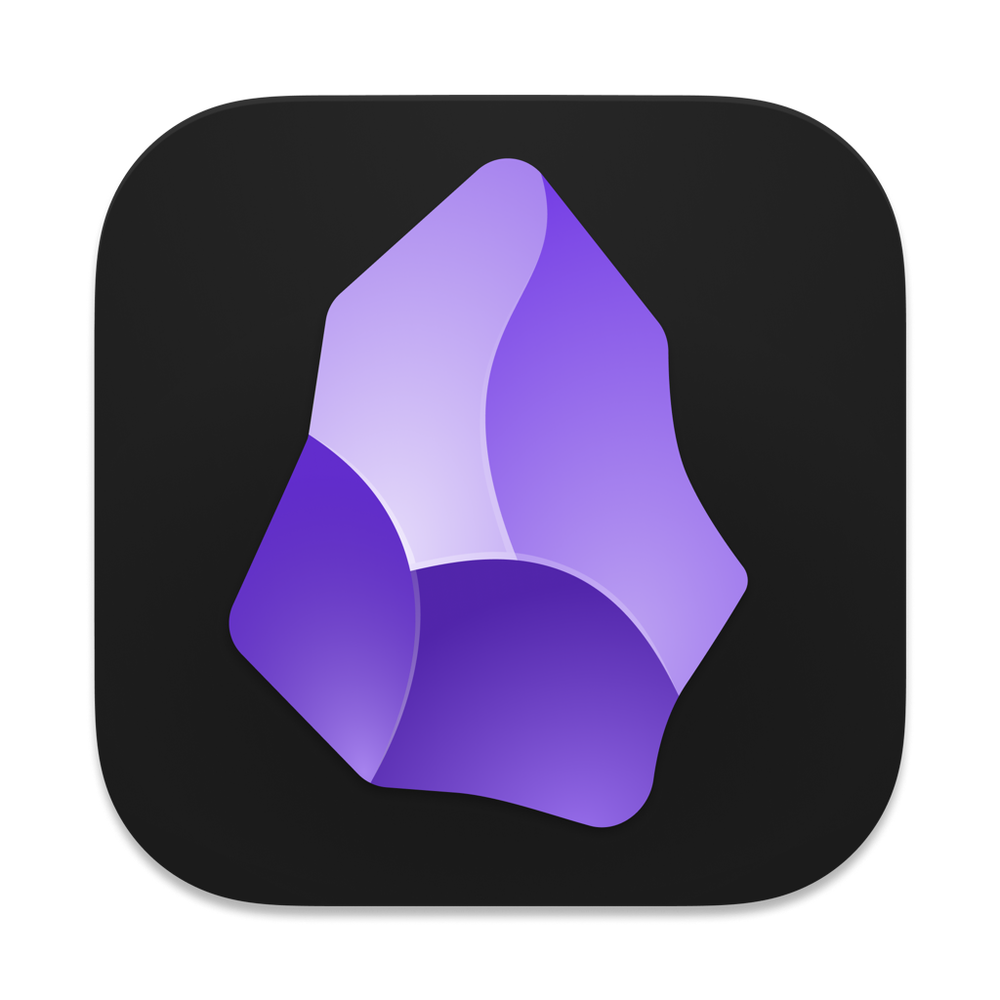
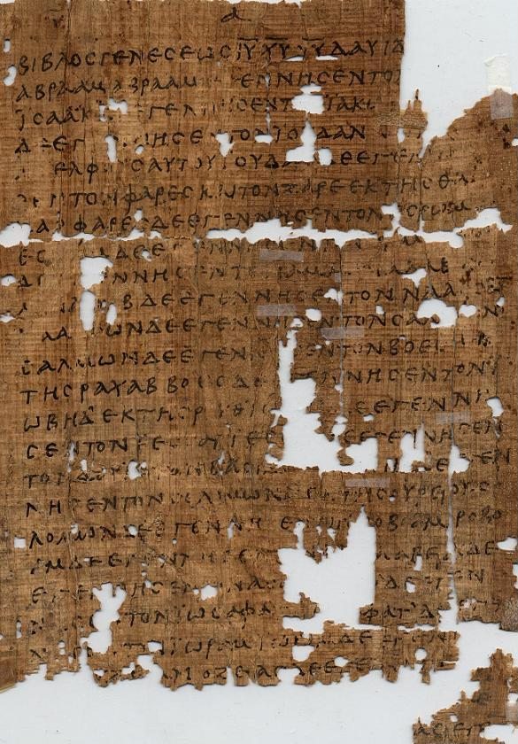
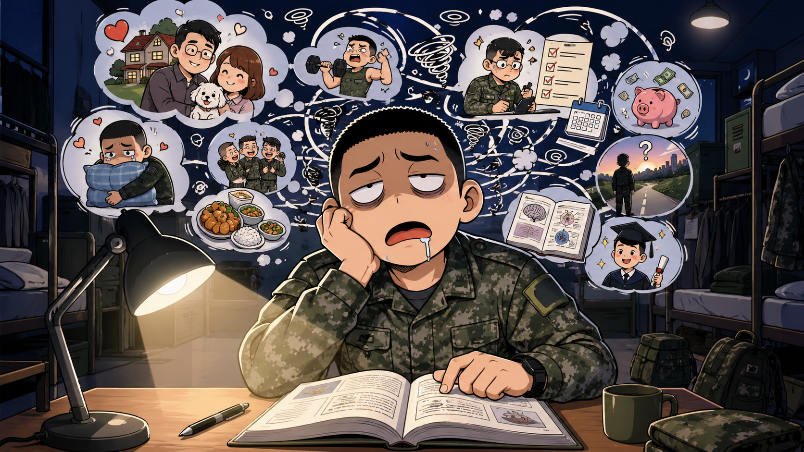
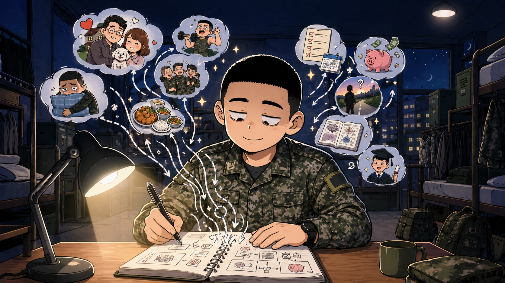
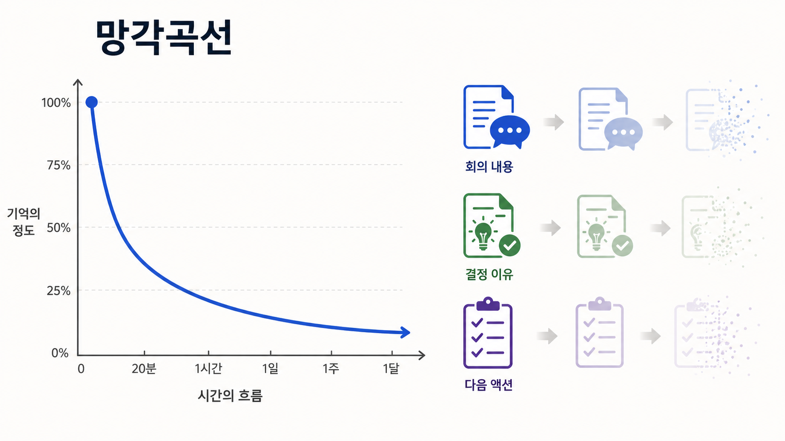
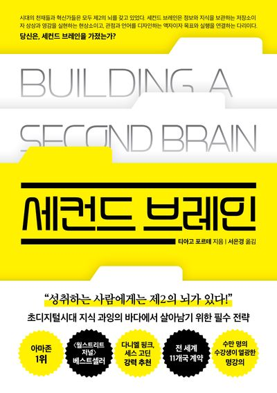
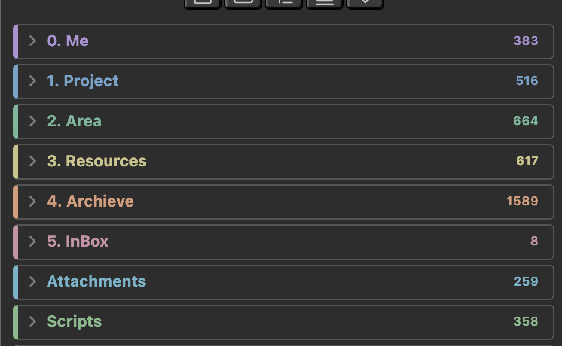
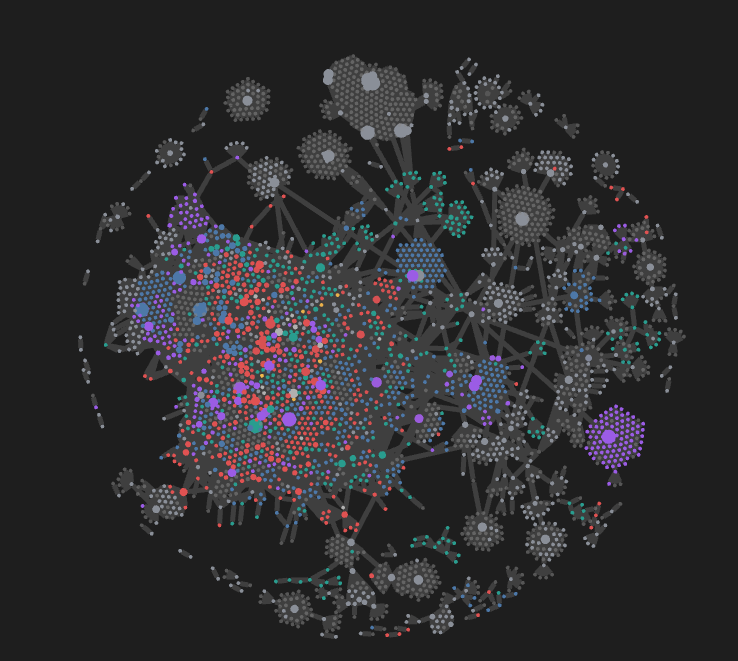

기록, 세컨드 브레인, Obsidian
기록을 시스템으로
2026.04.29 · Muzzle
기록해야 하는 이유
문명은 기록 위에 쌓였다
기록은 생각을 다음 사람에게 넘기고, 다음 세대가 그 위에 올라서게 만든다.

Papyrus
생각을 머리 밖으로 꺼내고, 멀리 보내기 시작한 매체.
Codex
기록을 묶고, 넘기고, 원하는 곳으로 돌아가게 만든 형식.
Book
한 사람의 생각을 누적 가능한 지식으로 퍼뜨린 도구.
Hook: 중요한 건 기록의 누적이다. 누적된 기록 위에 올라설 때 다음 생각이 더 멀리 간다.
Muzzle Story
군대 연등 시간, 책을 읽는데 잡생각이 계속 열려 있었다.

Before
책은 보고 있는데, 머릿속은 다른 생각으로 가득함.

After
적어두면 머릿속 스위치가 꺼지는 느낌이 있었다.
연결 개념: 자이가르닉 효과, 인지적 오프로딩
Why 1. 기억력의 한계
기록은 시간을 두 번 사는 것과 같다. — 이동진

시간이 지날수록 기억은 급격히 감소한다.
크게 데인 적이 없어서가 아닐까..?
ex) 기념일
Why 2. 성찰의 재료
경험은 지나가지만, 기록하면 다시 다룰 수 있는 재료가 된다.
Why 3. AI Context
좋은 기록은 좋은 프롬프트의 기반이 된다.
💊 파란약
AI가 알아서 내 맥락까지 정리해주겠지.
편하지만 기준이 흐려진다.
🔴 빨간약
내 Context는 내가 관리해서 AI에게 먹인다.
귀찮지만 AI가 파트너에 가까워진다.
세컨드 브레인
머리는 아이디어를 떠올리는 곳이지, 붙잡아 두는 곳이 아니다.
— 데이비드 앨런
Building a Second Brain
저장을 위임하고, 다시 꺼내 쓸 수 있게 만드는 개인 지식관리 방법론.

티아고 포르테
개인지식관리 방법론 `Building a Second Brain`과 `PARA`를 정리한 생산성 전문가.
Building a Second Brain
정보를 붙잡고, 정리하고, 압축하고, 결과물로 꺼내는 방법을 다룬 책.
CODE: 정보가 결과물이 되는 흐름
저장만 하면 보관함이고, 다시 꺼내 표현해야 세컨드 브레인이 된다.
PARA: Organize의 한 가지 방법
CODE의 `Organize` 단계에서 정보를 주제보다 행동 가능성 기준으로 배치하는 방식이다.
Project
목표와 끝이 있는 현재 진행 중인 일
Area
지속적으로 기준을 유지해야 하는 책임 영역
Resource
언젠가 쓸 수 있는 관심 주제와 참고 자료
Archive
지금은 active하지 않지만 보관할 것
Obsidian
내 기록을 내 방식으로 운영하는 공간.
요즘 왜 Obsidian 얘기가 나오는가에 대한 고찰
AI 시대에는 개인 Context가 곧 개인화의 재료가 된다.
Obsidian은 데이터 자취방이다
직접 꾸미고 청소해야 하지만, 내 방식으로 바꿀 수 있다.
풀옵션 오피스텔
들어가자마자 예쁘고 협업하기 쉽다.
대신 구조와 규칙은 서비스가 정한다.
내가 꾸미는 자취방
청소와 관리가 필요하다. 대신 파일, 링크, 구조를 내 손에 둘 수 있다.
Obsidian 체크리스트
3개 이상이면 Obsidian이 꽤 잘 맞을 수 있다.
(기록만 바로 쓸 수 있으면 된다.)
(빠른 기록, 검색, 백업이 먼저다.)
(Markdown 파일로 이사할 수 있어야 한다.)
(플러그인과 템플릿을 내 방식으로 맞춘다.)
(오래된 노트와 파일을 가끔 정리한다.)
Muzzle Obsidian Example

폴더 구조 예시

Graph View 예시
Obsidian에서 자주 사용하는 플러그인
Obsidian에서 자주 사용하는 Skill
AI 시대에도 계속 기록을 해야할까?
AI Model은 통제할 수 없지만, 내 기준과 루틴은 쌓아갈 수 있다.
통제할 수 있는 것과 없는 것
AI Model의 발전 속도는 통제할 수 없다. 대신 취향, 맥락, 판단 기준은 내가 쌓아갈 수 있다.
AI Model의 발전 속도
더 빠르고 강한 모델은 계속 나온다.
개인이 그 속도를 직접 통제할 수는 없다.
영화에서는 보통 캐릭터의 깊이는 감독의 역량을 넘어서기 힘들다라는 표현이 있다
AI에게 맡길수록 개인의 Taste가 중요해진다.
우리가 AI를 Directing 한다면
우리 역량을 쌓아가는 게 중요하다.
취향, 맥락, 판단 기준은 기록으로 선명해진다.
기록은 나의
해상도를 높이는 일이다.
Obsidian은 그 과정을 운영하는 도구다.
Obsidian Try Try
거창하게 시작하지 말고, 오늘 하나 적고 내일 다시 꺼내보자.